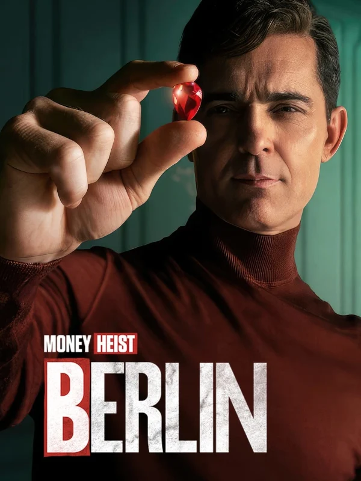
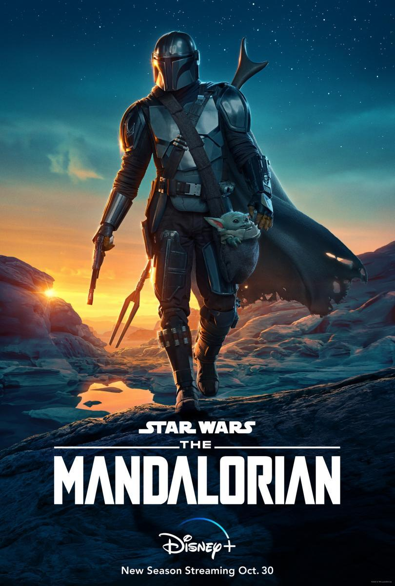
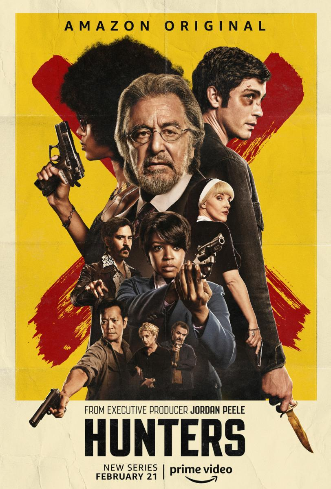

¿Quieres saber cuales son algunas de las Series estrenadas en 2023?
Aquí podrás encontrar 10 del gran número de Series estrenadas durante este año,cabe recalcar que no siguen ningún criterio a la hora de ser elegidas y ordenadas.
1. The Witcher (Temporada 3)

29 de junio / 27 de julio
Geralt de Rivia vuelve, aunque será la última vez que lo veamo encarnado por Henry Cavill: el actor se despide del personaje con esta tercera tanda de episodios, que prometen más fantasía, criaturas, magia y batallas de acción. La historia seguirá desde donde lo dejamos en el final de la temporada 2, y según ha avanzado la sinopsis nos mostrará el entrenamiento de Geralt con Ciri y Yennefer en la protegida fortaleza de Aretuza. Pero su refugio se verá atenazado por la corrupción política, la magia oscura y la traición.
2. Ahsoka

22 de agosto de 2023
Tras su celebrada aparición en la segunda temporada de 'The Mandalorian', Ahsoka Tano tendrá su propia serie en Disney+, protagonizada por Rosario Dawson. La habilidosa Jedi apareció por primera vez en las Guerras Clon y brilló en la seria animada 'Star Wars Rebels'. Según informaciones aún no confirmadas, la serie, que está situada en la misma línea temporal que 'The Mandalorian', seguirá a Ahsoka en la caza del malvado Gran Almirante Thrawn con la esperanza de localizar al joven jedi Ezra Bridger, desaparecido años atrás.
3. 30 monedas (Temporada 2)

23 de octubre de 2023
El terror español volverá a HBO en 2023 con la segunda temporada de '30 monedas', creada por Álex de la Iglesia. Así reza la sinopsis oficial: "La mayor parte del pueblo de Pedraza está loco, encerrado en un psiquiátrico. Elena yace en coma, en una oscura cama de hospital. Paco, destrozado por los remordimientos, intenta cuidar de ella, pero no es fácil. Pero, ¿qué es del padre Vergara? ¿Ha muerto, junto con su archienemigo, el cardenal Santoro? ¿Dónde se esconden, las almas torturadas?".
4. Berlín
29 diciembre de 2023
Un éxito tan arrollador como 'La casa de papel' no podía acabarse tan pronto: en 2023, veremos el primer spin-off de la serie, que viaja al pasado para rescatar a un personaje favorito de los fans: Berlín, al que vuelve a dar vida Pedro Alonso. Lo que vimos en los flashbacks de la quinta temporada de 'La casa de papel', que fue la última, podría haber sido un adelante de lo que nos ofrecerá 'Berlín' el próximo año: los años en los que el ladrón, junto a su novia y su hijo, perpetraban los robos más complicados y sustanciosos jamás vistos.
5. The Boys: Gen V
29 de septiembre de 2023
El nuevo spin-off de 'The Boys' tras la serie animada 'The Boys: Diabolical' se llama 'Gen V', y transcurrirá en paralelo a los eventos que acabamos de presenciar en la temporada 3 de 'The Boys'.'Gen V' parece buscar otro enfoque alejado de la sátira política, feminista y anticapitalista de 'The Boys' en una comedia de instituto donde los adolescentes, eso sí, mantendrán el nivel de salvajismo, sangre y vísceras mostrado por la adaptación de los cómics de Garth Ennis.
6. The Mandalorian (Temporada 3)
1 de marzo de 2023
La tercera temporada de 'The Mandalorian' ha llegado a Disney+ para seguir con las aventuras del mandaloriano preferido de los fans de Star Wars. Tras lo ocurrido en los capítulos de ‘El libro de Boba Fett’, ya podíamos asegurar de antemano no solo aseguran el regreso de Din Djarin (interpretado por Pedro Pascal), sino una nueva temporada con Baby Yoda. Siempre y cuando tengas claro el orden de las películas y series de Star Wars para enterarte de todo, puedes lanzarte a esta serie y disfrutar de otros mundos diferentes de la galaxia más allá de la saga Skywalker.
7. The Last of Us
15 de enero de 2023
El exitoso videojuego, uno de los más vendidos de Playstation, ya ha llegado a la pequeña pantalla: 'The Last Of Us' es una historia ambientada en un escenario posapocalíptico en el que la humanidad ha sido diezmada por un virus mortal. Una forma de la naturaleza de decirnos que nos hemos pasado de la raya. El videojuego cuenta con dos entregas, la segunda estrenada en 2020, y es posible que la serie mezcle las dos historias. Protagonizada por Pedro Pascal y Bella Ramsay, y liderada por Johan Renck, Craig Mazin y Neil Druckman (guionista del videojuego).
8. Hunters (Temporada 2)
13 de enero de 2023
¿Preparados para la segunda temporada de 'Hunters'? La espera se hizo larga, pero la serie de Amazon Prime Video volvió en enero de 2023, eso sí, para despedirse. Sí, la segunda temporada es la última de la serie, pero eso no quiere decir que no podamos disfrutar de sus últimos ocho episodios. Creada por David Weil y producida por Jordan Peele, la historia sigue a un grupo de cazadores de nazis que intentan impedir el resurgimiento del Tercer Reich en Estados Unido.
9. Succession (Temporada 4)
27 de marzo de 2023
Pues claro que 'Succession' es una de las mejores series del momento, lo que quedó constatado en los premios Emmys 2022, donde la serie de HBO Max se puso a la cabeza de la lista. Desde luego, esta creación de Jesse Armstrong ha ido calando paulatinamente hasta convertirse en uno de los títulos imprescindibles del momento. La cuarta temporada sigue de nuevo a la familia Roy después el sorprendente final de la temporada 3 de 'Succession', en el que una traición desbarató todos los planes de los herederos del imperio Waystar Royco.
10. Outlander (Temporada 7)

17 de junio de 2023
Basada en las novelas de Diana Gabaldon, 'Outlander' ya prepara su temporada 7, que será la más larga de la historia de la serie y tendrá que resolver los problemas con los que nos dejó el final de la temporada 6 de 'Outlander'. La historia seguirá explorando la relación entre los protagonistas, Claire (Caitriona Balfe) y Jamie (Sam Heughan), mientras se enfrenta a los problemas que han sucedido en Fraser's Ridge y que podrían poner en peligro todo lo que han construido juntos.